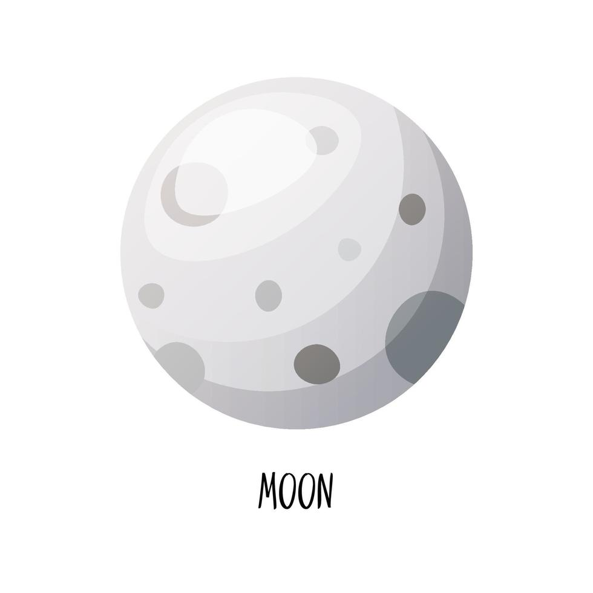

Necesito tu ayuda para retirar los planetas dañados y colocar los nuevos de cada ejemplo del museo que existe en el planeta
Pero tambien hay que colocar la cantidad de lunas cuando un planeta no tiene la cantidad de lunas correctas
si necesitas saber sobre el sistema solar puedes consultarlo en mi libro
CONSEJOS
Memoriza la cantidad de lunas que tiene cada planeta
El sistema solar tiene cientos de lunas que orbitan planetas y planetas enanos. Las más conocidas son la Tierra, con una sola luna; Marte, con Fobos y Deimos; Júpiter, que tiene 95; Saturno, con 146; Urano, con 28; y Neptuno, con 16.

Mercurio y Venus: No tienen lunas.
La Tierra: Tiene una luna.
Marte: Tiene dos lunas: Fobos y Deimos.
Júpiter: Tiene 95 lunas. Algunas de sus lunas más grandes son Ganímedes, Calisto, Ío y Europa.
Saturno: Tiene 146 lunas. Titán es su luna más grande y conocida.